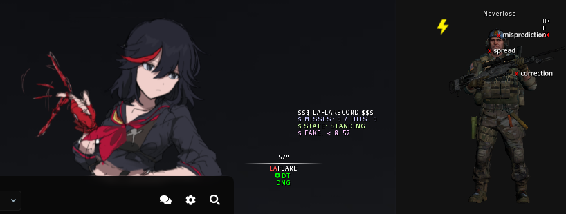
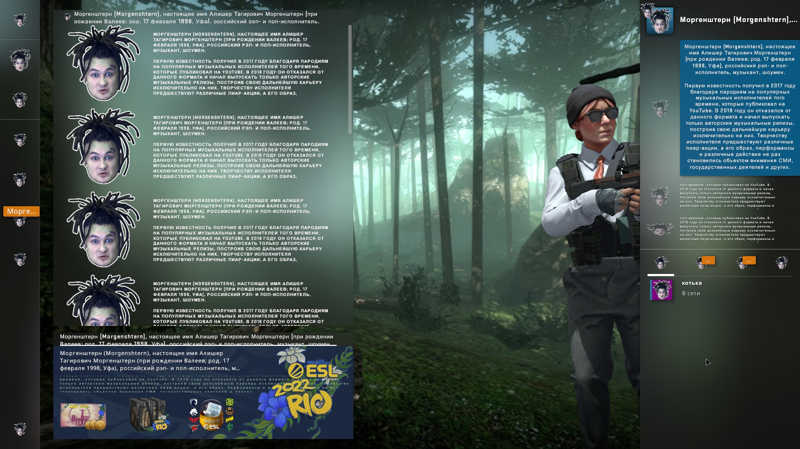

Conditions if lethal (only SSG-08) - helps killing lethal players.
Autocalculate damage - uses cheat’s APIs to calculate possible damage from your weapon
Extrapolate local player - helps autocalculating damage more correctly using your velocity and
position
Minimum health (if autocalculate is turned off) - applies conditions if the target’s health is
lower than this value
Values: Body aim, Safe points, Ensure safety (on hitboxes)
Adaptive autopeek - makes autopeek more comfortable
Apply only with SSG-08 - useful if you use mindamage for idealticking, so you will not ruin your AWP
experience
Values: Minimum damage, Hitchance, Body aim, Safe points, Ensure safety (on hitboxes), Freestanding
Adaptive hitchance
Weapons: Autosnipers, AWP, SSG-08
Conditions: In air, Unscoped, Slowwalking
Values: Hitchance
Fast zeus - instantly switches to your primary weapon after firing from zeus
Jumpscout improvement - disables autostrafer when you have low speed, so you can hit
jumpshots
Activate defensive while in air - magically makes everyone miss, also named as “Break LC in
air”
Manual direction: Disabled, Left, Right - rotates your player.
Antiaim builder - helps you making perfect antiaim.
Conditions: Global, Air+duck, Air, Slowwalk, Duck, Running, Standing
Yaw: Disabled, Backward, Static
Yaw base: Local view, At targets
Yaw offset: value from -180 to 180
Yaw modifier: Disabled, Center, Offset, Random, Spin
Yaw modifier offset: value from -180 to 180
Body yaw:
Left/Right limits: value from 0 to 60
Options: Avoid overlap, Jitter, Randomize jitter, Anti bruteforce
Desync freestanding: Off, Peek fake, Peek real
On shot: Default, Opposite, Freestanding, Switch
LBY mode: Disabled, Opposite, Sway
Extended angles:
Extended pitch: value from -180 to 180
Extended yaw: value from 0 to 90
Jitter legs - constantly switches “Leg movement” values
Export - copies your antiaim builder settings to the clipboard, so you can share them with
friends
Import - pastes antiaim builder settings from the clipboard
Aspect ratio - stretches your screen
Viewmodel - changes your hands’ position
Flash icon on round start - highlights csgo’s taskbar icon with orange color on the round
start
Laflare clantag - animates your clantag so you can flex with our script
Trashtalk - says something that Morgenshtern would say after the kill. как дела как дела
это новый кадиллак
Aimbot logs - logs your misses and hits to the console and upper left corner
Change VGUI color - changes console and server browser color

Lightning zeus flag - shows sexy zeus flag instead of not sexy one
Missmarker - like hitmarker, but for misses
Custom scope - replaces black scope lines with customizable gradient lines
State panel - shows info about desync, hit/miss ratio, and current player state
Indicators - shows desync length, inverter side and important binds under the crosshair
Ryuko on menu - shows the best girl on planet earth right above your menu :3
Become MORGENSHTERN - doesn’t need an explanation
